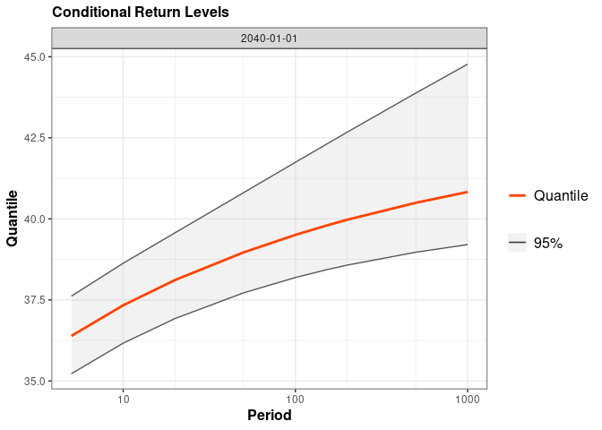

NSGEV
The NSGEV R package is devoted to some Non-Stationary Extreme Value models.
The main function of the package is TVGEV which creates an object with class "TVGEV" representing a Time-Varying model with GEV margins depending on the time. This kind of model is especially useful to study block maxima, usually annual maxima. This kind of models could be used with CRAN packages such as extRemes, yet NSGEV makes it easier to cope with bases of functions. It also brings some new things such as the profile likelihood confidence intervals on the return levels or on the quantile of the maximum on an arbitrary period.
Example
In this example we use the annual maxima of the daily maximal temperature (TX) in Dijon (France) provided as the TXMax_Dijon data frame. Note that the warnings and messages will not be shown in this example.
The annual maxima in Celsius are given in in the column TXMax
library(NSGEV)
head(TXMax_Dijon)
#> Year TXMax
#> 1 1921 NA
#> 2 1922 NA
#> 3 1923 NA
#> 4 1924 33.6
#> 5 1925 34.2
#> 6 1926 34.8A TVGEV model requires a date variable indicating the beginnings of the annual blocks. This variable can be easily created from the Year variable
df <- within(TXMax_Dijon, Date <- as.Date(paste0(Year, "-01-01")))
fit0 <- TVGEV(data = df, response = "TXMax", date = "Date",
loc = ~ 1)
coef(fit0)
#> mu_0 sigma_0 xi_0
#> 32.94616 1.87935 -0.19645
autoplot(fit0)
We can fit a model with a linear time trend. A possibility is to use the polynomX function that creates a basis of polynomial functions for a given degree. This makes a variable t1 available for the fit
fit1 <- TVGEV(data = df, response = "TXMax", date = "Date",
design = polynomX(date = Date, degree = 1),
loc = ~ t1)
autoplot(fit1)
coef(fit1)
#> mu_0 mu_t1 sigma_0 xi_0
#> 32.93752186 0.01527735 1.84567285 -0.20471258The predict method can be used to compute conditional return levels corresponding to a given year, be it a past or future year. Since a TVGEV object keeps trace of the design function(s) used the prediction does not require a data preparation step. By default the “new” dates at which the return levels are computed are those in the data frame used to fit the model


The default confidence intervals are obtained by using the “delta method” but profile likelihood intervals can be obtained as well by using the confintMethod argument (possibly abbreviated as confint of conf). Note that the autoplot method is to be used rather than the plot method, because the **ggplot2* package is used.
Rather than the maximum on a specific block, one can consider the maximum on a larger period as sometimes called a design life period. The distribution of is then no longer a GEV but the its quantiles can be computed with confidence intervals
date <- as.Date(paste0(2025:2040, "-01-01"))
qm <- quantMax(fit1, date = date, confint = "proflik", trace = 0)
autoplot(qm) + ggtitle("Quantile of the maximum on 2025-2040")
By changing the value of the design argument one can different use basis functions such as splines with given knots.
INSTALLATION
With the remotes package
In an R session use
This should install the package and make it ready to use.
Mind that by default this does not build the vignettes shipped with the package (long-form documentation). To build the vignettes, use instead
install_github("IRSN/NSGEV", dependencies = TRUE, build_vignettes = TRUE)The installation will then take more time but the vignettes will be accessible from the help of the package (link above the “Help Pages” section).
You can also select a specific branch or a specific commit by using the suitable syntax for install_github. See the remotes package documentation for more details.
Precompiled versions
Precompiled versions of the package are available for some platforms and can be downloaded by using the Releases link of the GitHub Repository. Use NSGEV_x.y.z.tgz for MacOS, NSGEV_x.y.z.tgz for Windows and NSGEV_x.y.z_R_x86_64-pc-linux-gnu.tar.gz for Linux Ubuntu where x, y and z are the major, minor and patch numbers of the package version.